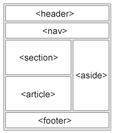

O elemento semântico descreve claramente seu significado tanto para o navegador quanto para o desenvolvedor. Em HTML, elementos semânticos são os tipos de elementos que podem ser usados para definir diferentes partes de uma página da web, como <'form'>, <'table'>, <'article'>, <'header'>, <'footer'>, etc
A tag <'header'> é usada para marcar a seção superior de uma página da Web, que normalmente inclui o título ou logotipo principal, links de navegação e outros elementos comuns a todas as páginas do site. Você pode criar uma separação clara entre o cabeçalho e o conteúdo principal da sua página, tornando mais fácil para os usuários entender e navegar no seu site.
A tag <'nav'> é usada para marcar uma seção de uma página da web que contém links de navegação.
A tag <'main'> é usada para marcar a área de conteúdo principal de uma página da web.
A tag <'article'> é usada para representar um conteúdo independente, como uma postagem de blog, artigo de notícias ou revisão de produto. O conteúdo deve ser independente e significativa e pode incluir cabeçalhos, parágrafos, imagens e outros tipos de conteúdo.
A tag <'aside'> é usada para marcar o conteúdo relacionado ao conteúdo principal de uma página da Web, mas não é parte integrante dela.
A tag <'section'> é usada para marcar seções de uma página da Web agrupadas tematicamente. Isso pode incluir itens como capítulos ou seções de um artigo longo ou diferentes partes de uma página de produto.